SEBASTIAN STARKE, Meta Reality Labs, UK PAUL STARKE, Meta Reality Labs, CH NICKY HE, Meta Reality Labs, US TAKU KOMURA, The University of Hong Kong, HK
YUTING YE, Meta Reality Labs, US

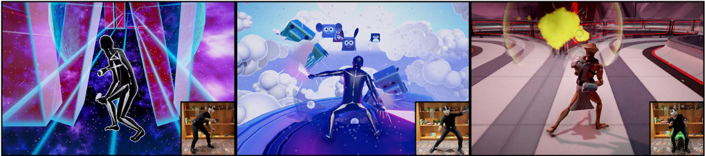
Translating motions from a real user onto a virtual embodied avatar is a key challenge for character animation in the metaverse. In this work, we present a novel generative framework that enables mapping from a set of sparse sensor signals to a full body avatar motion in real-time while faithfully preserving the motion context of the user. In contrast to existing techniques that require training a motion prior and its mapping from control to motion separately, our framework is able to learn the motion manifold as well as how to sample from it at the same time in an end-to-end manner. To achieve that, we introduce a technique called codebook matching which matches the probability distribution between two categorical codebooks for the inputs and outputs for synthesizing the character motions. We demonstrate this technique can successfully handle ambiguity in motion generation and produce high quality character controllers from unstructured motion capture data. Our method is especially useful for interactive applications like virtual reality or video games where high accuracy and responsiveness are needed.
CCS Concepts: · Computing methodologies → Motion capture; Neural networks.
Additional Key Words and Phrases: neural networks, human motion, character animation, character control, character interactions, deep learning
ACM Reference Format:
Sebastian Starke, Paul Starke, Nicky He, Taku Komura, and Yuting Ye. 2024. Categorical Codebook Matching for Embodied Character Controllers. ACM Trans. Graph. 43, 4 (July 2024), 14 pages. https://doi.org/10.1145/3658209
Authors' addresses: Sebastian Starke, Meta Reality Labs, UK, sstarke@meta.com; Paul Starke, Meta Reality Labs, CH, paulstarke@meta.com; Nicky He, Meta Reality Labs, US, nickyhe@meta.com; Taku Komura, taku@cs.hku.hk, The University of Hong Kong, HK; Yuting Ye, Meta Reality Labs, US, yuting.ye@meta.com.
Permission to make digital or hard copies of part or all of this work for personal or classroom use is granted without fee provided that copies are not made or distributed for profit or commercial advantage and that copies bear this notice and the full citation on the first page. Copyrights for third-party components of this work must be honored. For all other uses, contact the owner/author(s).
© 2020 Copyright held by the owner/author(s).
0730-0301/2024/7-ART
https://doi.org/10.1145/3658209
1 INTRODUCTION
Embodied virtual characters that accurately reflect users' movements and behaviors are essential for immersive experiences in augmented and virtual realities (AR/VR). AR/VR applications differ from traditional flat-screen video games in both the input and output requirements. In addition to gestural and directional inputs from buttons and joysticks, AR/VR provides detailed but sparse 3D motion signals of the user, in the form of 6D trajectories of the headset and two controllers, known as the "three-point tracking" problem [Du et al. 2023; Winkler et al. 2022]. For convincing embodiment, they must be followed precisely rather than directionally in the generated full body motion. However, they encode little information about the lower body. For instance, the same three-point input could suggest both sitting or squatting. Yet users expect faithful and realistic full body actions regardless, such as stepping with the same leg while they walk or realistic foot shuffles as they shift weights. The demand for a higher degree of accuracy, realism, and responsiveness in AR/VR character embodiment poses unique challenges for animation controller design.
The prominent solution for today's video games, motion matching [Mach and Zhuravlov 2021], is not suited to handle these challenges. Motion matching selects the optimal next pose or short sequence from a database in real-time, using nearest neighbor search based on carefully designed features to balance between performance and quality. It fundamentally cannot accommodate arbitrary user movements, particularly under strict memory and runtime constraints in AR/VR. Neural network solutions offer an attractive alternative for navigation or goal-driven tasks with much greater motion diversity [Ling et al. 2020; Starke et al. 2022, 2019]. However, when applied to the three-point tracking problem, they fall short of producing realistic poses or dynamics beyond simple locomotion, such as jumping, dancing or sports movements [Du et al. 2023; Jiang et al. 2022]. We
2 · Starke et al.
posit that the gap between these two types of problems is the lack of future information in three-point tracking. In fact, the more successful three-point tracking solutions utilize reinforcement learning (RL) for planning and may still consume a short trajectory of future signals [Lee et al. 2023a; Winkler et al. 2022].
In our work, we propose an embodied character controller that combines the quality of motion matching and the flexibility of neural networks with the simplicity of end-to-end supervised learning. We utilize an autoencoder to compress a large and diverse dataset into a compact and discrete latent space using Vector-Quantization (VQ) [Oord et al. 2017] and adapt Gumbel-Softmax [Jang et al. 2017] to model the multi-modal distribution over the discrete latent space in form of a categorical probability distribution. A discrete latent space can effectively prevent small errors from accumulating which is essential for autoregressive inference.
However, our controller differs from existing autoregressive controllers in significant ways. First, our latent space encodes a short sequence rather than a single pose. Second, instead of using control signals as a condition, we design a separate Input Encoder that takes the control signals as input, and outputs a distribution in the latent space. Third and most importantly, we train the autoencoder and the Input Encoder simultaneously in an end-to-end manner with supervised learning. Instead of supervising the controller loss in pose space, we formulate it as a categorical probability distribution in the latent space, where the output of the Input Encoder should match the latent code of the autoencoder. Since our controller predicts the probabilities of motions instead of predicting the motions directly, it alleviates the problem of wrong blending artifacts that may appear in the latent space due to ambiguity in the motion generation process. At inference time, the Input Encoder takes the control signals, and outputs a distribution of latent codes by which it emulates the nearest neighbor search of motion matching efficiently in the latent space of a diverse dataset. We then sample from the distribution and decode a short future motion sequence from which we select the next pose. Our learning scheme is not only much simpler than a two-stage process with RL, it also ensures the latent space is organized to best accommodate the control task due to end-to-end training.
Our control formulation is an important ingredient specific to AR/VR applications. User inputs may come in form of three-point signals (without future information), a goal location (from a button trigger), a heading direction or velocity (from joystick) as well as combinations thereof. However, instead of learning the motion from the history directly, we transform the history of those signals into short sequence of future trajectories to anticipate the users' motion. We then utilize this prediction in the supervised learning process above to predict the corresponding lower body motion in an autoregressive manner and fuse the full-body motion.
We demonstrate the effectiveness and flexibility of our embodied character controller in a variety of applications, such as synthesizing diverse locomotion skills, crouching, squatting, jumping, dancing, sitting down and getting up from the floor, performing sports like tennis or baseball, or playing video games like beatsaber or shooters. We further show our framework combining three-point inputs with traditional joystick or button controls to synthesize embodied user movements while freely navigating the character locomotion.
The key contributions of this paper can be summarized as follows:
· A novel generative framework that enables learning embodied character controllers to perform diverse motion skills.
· End-to-end training of a discrete motion manifold and how to sample from it by matching two categorical probability distributions in the latent space.
· Support for different sensor modalities beyond three point inputs such as joystick or button control while preserving the original motion context of the user.
· A new diverse human motion dataset 1 for AR/VR.
2 RELATEDWORK
Learning motion models from motion capture data has been a core topic in computer animation. As our work develops such a model in a vector quantized (VQ) latent space, we first review motion models including latent space models. We next review about control of characters with such models. Finally we review methods most related to our application for motion tracking in virtual reality.
2.1 Learning Motion Models fromMotion Capture Data
Given the large motion capture dataset, motion models to learn the structure of the data have been developed. Motion graphs [Arikan and Forsyth 2002; Kovar et al. 2002; Lee et al. 2002], which is a discrete representation of the motion space, is computed from the data by producing transitions where the poses are similar in the original space. Motion fields [Lee et al. 2010] finds nearest neighbours of a sample computed by integration and construct a continuous motion space. As such models are memory intensive, methods to learn structures in the latent space based on HMM [Li et al. 2002], PCA [Min and Chai 2012], LSTM [Lee et al. 2018], CNN [Holden et al. 2016, 2015] and transformer [Petrovich et al. 2021] have been developed to learn compact representations of the motion data.
Generative models are statistical models that can produce novel motions by sampling noise: methods based on GPLVM [Grochow et al. 2004], Gaussian Processes [Wang et al. 2008], RBM [Taylor and Hinton 2009; Taylor et al. 2007], variational autoencoders (VAE) [Ling et al. 2020], normalizing flows [Valle-Pérez et al. 2021] and diffusion models [Tevet et al. 2023] are applied for constructing such models. Generative models are also applied in physics-based character controllers where the user can apply external forces to the characters to produce realistic response by the characters: ASE [Peng et al. 2022] is a generative adversarial imitation learning scheme where a generator produces motion based on the user instruction and sampling, while the discriminator is trained for producing realistic physics-based character controller.
Despite the fact that such latent space models/generative models can produce novel motions that do not exist in the database, the industry has been reserving concerns of the smoothed-out artifacts when motions are blended for interactive character controllers, resulting in adopting methods such as motion matching [Clavet 2016]. To preserve the sharpness of the motion while compressing the data, methods such as VQVAE [Van Den Oord et al. 2017] which learn a discrete latent space have been applied for facial motion synthesis [Richard et al. 2021], full body motion synthesis [Cho et al.
1 The code and dataset are available at https://github.com/sebastianstarke/AI4Animation.

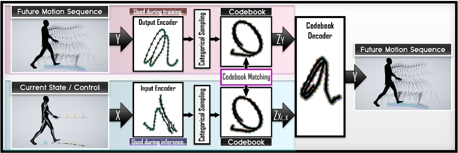
2021; Jiang et al. 2023; Yao et al. 2023; Zhu et al. 2023] or generating motions from text or speech [Kong et al. 2023; Yang et al. 2023; Yi et al. 2023; Zhang et al. 2023; Zhou and Wang 2023]. We also adopt a VQ framework for learning motions but different from VQVAE to address the posterior collapse problem as described next.
2.2 Character Control withMotion Models
Although motion models are useful data structures for representing the space of human motion, a controller that allows the users to provide inputs to produce their desired motion must be prepared on top of such models.
For structures such as motion graphs [Arikan and Forsyth 2002; Kovar et al. 2002; Lee et al. 2002] and motion fields [Lee et al. 2010], model predictive control and reinforcement learning (RL) are applied to launch a series of actions that provides most reward to the character [Lee and Lee 2004; Lee et al. 2006; Shum et al. 2008]. Similarly, RL are often combined with latent/generative models based on GPLVM [Levine et al. 2012], VAE [Ling et al. 2020] and VQVAE [Yao et al. 2023] for computing the optimal series of actions: In such situations, two stage learning is done where the motion model is first learned and then RL is applied to learn the optimal policy. The issue with such two-stage approaches is that the initial unsupervised training is done irrespective of the second training, and thus the learned latent space may not be necessarily suitable for the control, resulting in posterior collapse. The systemmay then suffer from slow response or unrealistic transitions.
Another stream of methods use supervised learning for computing movements that follow the user instruction. In methods such as motion matching [Clavet 2016], PFNN [Holden et al. 2017] and their variants [Holden et al. 2020; Starke et al. 2022; Zhang et al. 2018], features that are effective for finding movements that follow the user instructions are developed. Such approaches are easier to train compared to RL-based approaches, and may train in an end-to-end manner. Our scheme learns the motion space and the controller simultaneously in an end-to-end manner, and thus can learn a representation that is suitable for the control: we present such advantages in our experiments.
2.3 Motion Tracking for VR Applications
Virtual reality devices often require reconstructing the full body motion of the user from sensor inputs. Methods based on optimization [Von Marcard et al. 2017], deep learning [Huang et al. 2018] or their combination [Yi et al. 2022] have been applied for predicting the poses from IMU sensors at the end effectors and torso.
Recently, data-driven approaches are developed to estimate the full pose from even smaller number of sensors, e.g., three or less. This is an ill-posed problem with strong ambiguity, where many poses can exist for the same sensor inputs. Motion matching techniques [Ponton et al. 2022] and supervised learning schemes [Aliakbarian et al. 2022; Dittadi et al. 2021; Yang et al. 2021] are then developed for predicting the full body motion from a small number of sensors. However, motion matching offers limited diversity due to memory issues and thus can result in large tracking error. Supervised learning methods in a continuous space may drift from the manifold or wrongly blend movements, resulting in jittering artifacts [Yang et al. 2021] or poor leg movements with significant amount of foot skating [Aliakbarian et al. 2022; Dittadi et al. 2021].
To cope with such issues, methods based on physics-based methods are proposed [Jiang et al. 2022; Lee et al. 2023a; Reda et al. 2023; Winkler et al. 2022; Ye et al. 2022; Yi et al. 2022]: Ye et al. [2012] first predicts the kinematic reference frames and then they are tracked by RL-based controllers. Winkler et al. [2022] and Lee et al. [2023b] directly predict the torque that produces motion that controls the body to follow the sensor data. Although these methods can produce plausible movements, they require future sensor inputs that result in a small delay of the motion, which can be critical for VR applications. Although our approach is kinematics-based, it predicts the future movements by the user and utilizes that for fast and responsive movements of the character.
3 CATEGORICAL CODEBOOKMATCHING
Our network architecture shown in Fig. 2 is based on learning a vector-quantized representation of motions in the form of a categorical probability distribution within an autoencoder structure and a separate encoder structure that learns how to sample from the same distribution in an end-to-end manner. Unlike existing methods for kinematic character control that learn a direct mapping between inputs and outputs or utilize a motion prior that is trained on the motion data alone, our framework learns from both the inputs and outputs simultaneously to form a motion manifold that is informed about the control signals. During test time, only the inputs are required to sample the code vectors and to generate the output motions. Structurally this mapping can be formulated as

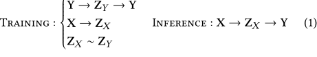
where Y is a future motion sequence, X is the current character state and future control signals, and Z𝑋 and Z𝑌 are two separately learned categorical probability distributions for X and Y respectively.
To learn such setup in a supervised manner, we propose a technique that we call Codebook Matching which enforces similarity between both latent probability distributions Z𝑋 and Z𝑌 . Since our model takes both X and Y as input during training, simply concatenating both inputs would cause X to have little or no impact during inference due to the identity mapping between Y when reconstructing the outputs. Instead, in our setup the inputs are given to a separate encoder block that only learns to sample from the motion manifold and which is formed only between the outputs. By introducing a matching loss between both categorical probability distributions, our codebook matching technique allows to substitute Z𝑌 by Z𝑋 during test time and offers two key advantages for data-driven motion synthesis: Firstly, as the model is informed about the output distribution during training, the network has the ability to bypass ambiguity in the motion generation where each sampled codebook vector projects against a valid output sequence. Secondly, it ensures that the feature distribution of the learned codebook vectors can be more accurately sampled during test time since the constructed motion manifold is informed about the control.
3.1 Motion Manifold as Categorical Codebook
Our framework learns the motion manifold in form of a vectorquantized autoencoder structure where each latent code is formed by a categorical probability vector using the Gumbel-Softmax method [Jang et al. 2017]. The codebook is trained to encode short motion sequences which helps preserving temporal coherence between code vectors and consecutive pose predictions. We use LRec as mean squared error reconstruction loss to train our motion manifold.

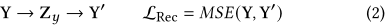
While the encoder and decoder blocks consist of fully-connected layers, the discretized latent space forms a codebook of possible motion sequences which acts as a strong manifold projector. Such latent space helps alleviating the distribution shift problem for autoregressive models where the observations during inference may not match those training. More specifically, a continuous latent space may allow wrong interpolation for a novel unseen input vectors and deviate from the learned distribution over multiple successive predictions, which causes difficulty during decoding. In our setup, the predicted probabilities enable selecting from a set of possible valid outcomes via sampling from a categorical distribution in the latent space. We visualize this projection mechanism in Fig. 3 where each latent vector is first transformed into a probability vector and then projected against a categorical vector. Each codebook vector is in form of 𝐶 × 𝐷 values where 𝐶 is the number of channels (rows) and 𝐷 is the number of dimensions (columns) for each channel. This combinatorial representaion via multiple one-hot vectors allows modeling a large range of motions in the codebook.

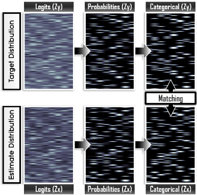
3.2 MotionQuery via Codebook Matching
To enable querying the codebook during inference, we learn a similar encoder block for the inputs that maps from the current character state and control signals X to a separate categorical probability distribution Z𝑥 which goal is to approximate the latent distribution formed by Z𝑦 . To achieve this, we utilize a codebook matching loss LMatch which minimizes the distance between both codebooks.

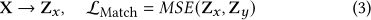
During inference this allows to substitute Z𝑦 by Z𝑥 and to predict the motion outputs for the next frame from the available information at the current frame. The categorical sampling further allows selecting multiple codebook vectors from the same input vectors. This technique can enhance motion diversity as shown in Fig. 4 and further improve sampling stability as it increases the probability of finding a good motion transition.

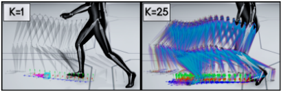

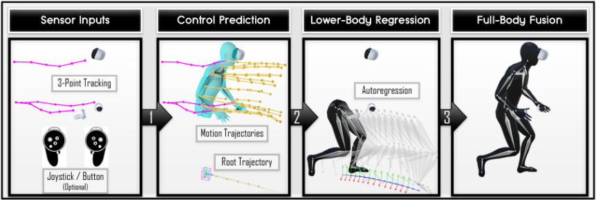
While during training we only sample a single code vector from Z𝑌 to reconstruct each motion sequence, during test time we sample 𝐾 codes Z𝑥1 ...Z𝑥𝐾 under the same input X. We show an example below in case of a codebook of size 𝐶 = 4 and 𝐷 = 2.

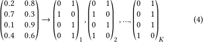
In the context of motion generation, instead of directly predicting the motions outputs from the control inputs, we only predict their probabilities for each of them to appear. This translates the ambiguity from the motion generation to the motion selection process, which avoids undesired blending artifacts that otherwise may appear due to wrong control interpolation in the latent space. In contrast to learning a motion prior and controller separately, the matching loss enables training both the motion manifold and the mapping from control to motion at the same time. Learning a motion prior separately may construct a latent space with complex structure and increase common codebook collapse problems in which case certain codes may be difficult to predict by the encoder or a sampled code may be unknown to the decoder. This can result in a loss of motion quality if no special tuning is applied.
3.3 Loss Function
We calculate the loss for training our model by adding both losses for motion reconstruction LRec and codebook matching LMatch:

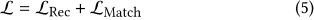
Note that our learning framework does not require minimizing a VQ loss that is needed when learning a separate discrete embedding as in [Oord et al. 2017]. The Gumbel-Softmax provides a continuous annealing of the Categorical distribution and allows using straightthrough estimator (STE) to instead match the codebooks directly.
4 EMBODIED CHARACTER CONTROL
Our embodied character control framework in Fig. 5 consists of three processing stages to predict the full-body avatar movements from sparse input sources. Given the tracking history from headset and controllers, we first predict a future estimate for upper body and root motion, then regress the lower body to follow those predictions, and finally fuse the lower and upper body to obtain a full-body motion. More specifically, we primarily focus on generating a lower body that moves realistically and responsive with the aim of keeping the hip in an accurate configuration to attach the upper body. If directly attaching the legs to an upper body, it can happen that the lower body becomes dragged which produces drifting or ground penetration artifacts. Thus, instead of solving the full body directly, we provide an estimate for the upper body motion to better condition the motion progression that is required by the lower body. Furthermore, unlike existing methods that attempt learning the movements from the tracker history directly, our framework learns to generate the movements from a set of predicted future control signals. We found that using the history as control signal has difficulty providing anticipation for motion synthesis and is more likely to produce motion jitter in case of noisy tracking data. Using a future estimate is robust to such input noise and produces more natural transitions that appear more proactive than reactive. Therefore, we suggest that using an estimated future can be more valuable than directly relying on an accurate history.
Sensor Inputs. Our set of sensor inputs includes a fixed tracker history TP that includes the positions, rotations and velocities for the headset, left and right controllers and where P =W 0 -0.5 (31) is a short time window 2 of 0.5s into the past. The user can additionally provide optional inputs from joystick axes and controller button to additively steer the locomotion in an interactive or goal-driven manner. We describe how both input modalities can be combined by our framework in the following control generation section.
2 We use the notation W𝑏 𝑎 (𝑁 ) to describe that we collect 𝑁 samples of data within a time windowWwhere each timestamp 𝑡 is within 𝑎 ≤ 𝑡 ≤ 𝑏.
6 · Starke et al.
Stage 1 - Control Prediction. During the first stage, we predict a set of future motion trajectories T + F from the collected tracker history TP within a time window F = W 0.5 0 (31) that covers half second into the future.

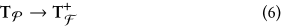
For that we utilize a fully-connected feedforward network structure. Those future trajectories T + F = (TF,𝑅, TF,𝑀1 , TF,𝑀2 , ..., TF,𝑀𝐾 ) are an extended set of 𝐾 motion trajectories TF,𝑀1...𝐾 for the upper body and root trajectory TF,𝑅. The motion and root trajectories include the positions, rotations and velocities in 3D and 2D respectively.
Those predicted trajectories cover the predicted intent of the users' body motion. To further combine these trajectories with additional control signals that may come from joystick or button press, we compute a separate root trajectory RF of future root transformations from the user inputs. This trajectory is computed similar to [Starke et al. 2022] and estimated by smoothly extrapolating the current root of the avatar to the desired target transformation. We can then combine the predicted root and motion trajectories with the controlled root trajectory via matrix multiplication in an additive manner.

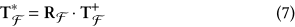
This way our control formulation allows synthesizing diverse embodied character movements from the same set of features without special handling of different input modalities.
Stage 2 - Lower Body Regression. We utilize our codebook matching architecture to predict an embodied motion of the lower body in an autoregressive manner. At every frame, we use the predicted future trajectories to let the network predict a future sequence of lower body transitions and select a pose within that sequence to advance the current pose from frame 𝑖 to the next frame 𝑖 + 1.

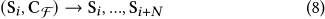
The network inputs X = (S𝑖 , CF) contain the current state of the character and a selected set of control signals that we extract from the predicted future trajectories T ∗ F to steer the lower body motion. The character state S𝑖 = (Δr𝑖 , p𝑖 , f𝑖 , l𝑖 ) contains the root delta transformationΔr𝑖 in the horizontal plane fromprevious frame 𝑖-1 to frame 𝑖 , the character pose p𝑖 including its positions, rotations and velocities in the local root frame, the binary foot contact labels f𝑖 and a binary root locking label l𝑖 . The control signals CF = (vF, aF, hF, cF, oF) contain the linear and angular root velocities vF and aF, hips positions hF, upper body centers cF and upper body orientations oF within a future window F = W 0.5 0.1 (5). The network outputs Y = (S𝑖 , ..., S𝑖+𝑁 ) are a sequence of motion states for 0.5 seconds in the future over 𝑁 = 16 frames.
Note that to regress the pose from one frame into the next, we include the character state at the current timestamp in the output sequence to select a transition to advance the motion. More specifically, during inference we sample a set of 𝐾 future motion sequences from the codebook where each prediction can be considered a possible set of future motion rollouts as shown in Fig. 4. We then search for the best matching candidate pose by calculating the distances between each pair of joints across all motion sequences to the current pose and compute the next pose by advancing the motion one frame forward within the sequence. This enables our method to support different rendering framerates or intervals of sensor inputs by interpolating between timestamps. By predicting the motion at every frame, the generated lower body motion can well follow the control signals in a highly responsive manner. Alternatively, it is also possible to only predict the motion every few frames and rollout multiple transitions to smooth the motion and to save computational cost but at higher response times.
Stage 3 - Full-Body Fusion. To obtain the full-body motion, we compute an upper body pose using blending or prediction depending on the user input: When the user moves purely via three-point tracking, we can perform a blending between the predicted upper body pose in stage 1 with the lower body pose in stage 2. We additionally apply inverse kinematics to match the end effector locations for wrists and head as well as the hips of the predicted lower body. When using joystick or button control or combinations with three-point input, we run a prediction of the upper body from the generated lower body history and tracker locations using a fully-connected feed forward structure. This enables producing plausible upper body movements when the real-world tracker signals are no direct source for synthesizing embodied full body poses. We use a duration of 0.5s to switch between blending and prediction.
5 NETWORK TRAINING AND INFERENCE
We generate the input and output features from the motion capture data and compute their mean and standard deviation. Our complete dataset contains ∼ 3 hours of unstructured motion data of same body proportions of diverse locomotion and interaction behaviors typical for VR/AR. Our character skeleton consists of 27 joints which are 19 for the upper body and 9 for the lower body. The upper body consists of the joints from the hip to the head and wrists and the lower body contains the joints from the hip to the left and right foot. We use a 6D rotation representation similar to [Zhang et al. 2018]. Each encoder/decoder block in our networks consists of two fullyconnected hidden layers of size 1024. The codebook size is similarly chosen as 1024, consisting of 128 channels and 8 dimensions per channel. We use Elu activation function and a dropout rate of 0.25 for all hidden units, apart from the codebook decoder block for which no dropout is used. We train our networks using the AdamW optimizer [Loshchilov and Hutter 2019] for 150 epochs, using a learning rate and weight decay both of 10 -4 with cosine annealing scheduling, and a batch size of 32. Training with a NVIDIA RTX 4090 GPU takes ∼ 1 day. The target framerate for our animation system is at 30Hz and requires ∼ 3ms inference time per frame. The compute time largely depends on the number of lower body motions that are sampled from the codebook. We found a number of 10-20 categorical samples to work well in our applications. After training, we convert our network models in ONNX format and use Sentis library to run the forward pass during inference. The total memory requirements for our networks are ∼ 25MB. To enable tracking users of different height, we first run a calibration of the height of the user and then globally scale the tracker locations to match the height of the avatar. Our animation controller is implemented inside the Unity engine.
6 EXPERIMENTS AND EVALUATION
In this section, we show our experimental results when using our codebook matching technique for character control tasks. First, we demonstrate its effectiveness on trajectory-based locomotion in comparison to motion matching. Next, we apply our embodied character control framework to synthesize a diverse range of motion skills from 3-point tracker inputs and evaluate tracking accuracy and motion quality with learning-based methods. We then showcase our framework on a novel application that is mixing traditional joystick or button inputs with 3-point inputs to create embodied locomotion controllers and use it for different game setups to experiment its flexibility and applicability for AR/VR. We further describe and demonstrate how our codebook matching technique can be used for producing collision avoidance behaviors by learning from random noise. Lastly, we also include an experiment in the appendix to show how our technique can well handle data ambiguity when mapping from sparse input signals to more expressive output functions.
6.1 Locomotion
We evaluate our framework for learning character controllers for typical character locomotion tasks in video games, such as following a trajectory defined by the user. Given a target location or velocity by the user, our method can produce diverse locomotion skills, such as walking in different directions, side-stepping, crouching or performing quick turns as shown in Fig. 6.
To demonstrate this, in Fig. 7 we visualize the generated root trajectories of our method (blue) in comparison to motion matching (red) while following a predefined path (black) that consists of sharp turns and different speeds between control points. Our method achieves much better responsiveness and tracking accuracy than motion produces and produces less jitter while preserving the motion detail as listed in Table 2. We compute the motion detail similar as [Starke et al. 2022] as the average joint angle updates. More specifically, achieving highly responsive motions with near-zero tracking error and without delay is crucial for generating motions in VR that feel embodied. Besides the high memory requirements of motion matching which limits its motion diversity, in Fig. 8 we visualize that its also limited accuracy renders it impractical for more challenging three-point tracking tasks in virtual reality.
Furthermore, while character control setups such as PFNN [Holden et al. 2017], NSM [Starke et al. 2019] or DeepPhase [Starke et al.

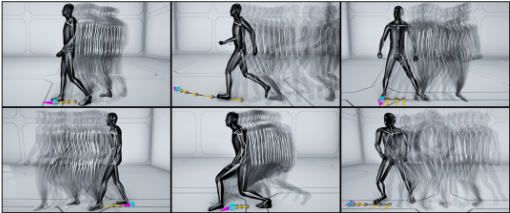

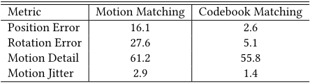
Recognized table text (check against the image)
| Metric | Motion Matching | Codebook Matching |
|---|---|---|
| Position Error | 16.1 | 2.6 |
| Rotation Error | 27.6 | 5.1 |
| Motion Detail | 61.2 | 55.8 |
| Motion Jitter | 2.9 | 1.4 |

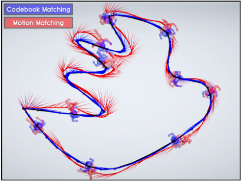
2022] have been demonstrated to produce sharper motions, their control signals are incrementally updated at each frame by the user in the local space of the character to stay within distribution. However, their quality visibly degrades if trying to accurately and timely match world locations that are updated regardless of the current location of the character such as for three-point tracking.
6.2 Three-Point Tracking
We apply our embodied character control framework shown in Fig. 5 to predicting the full-body movements of the user using threepoint input locations of the headset and controllers. We visualize the results in tracking diverse motion behaviors such as stepping, gestures, jumping, crouching, sitting down and getting up from the ground as well as sports motions in Fig. 9. Those motions are generated in real-time only using the history of tracker locations (magenta) and without direct access to future tracking information.

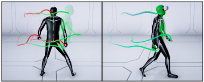

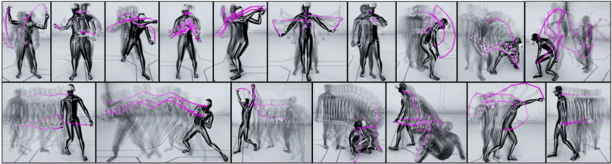
Our method achieves natural transitions between poses with low tracking error. We list the results for tracking error and motion detail for different methods in Table 2, including motion matching (MM), a phase-based neural network (PNN) using DeepPhase features [Starke et al. 2022], a conditional variational autoencoder (CVAE) as well as our method using codebook matching (CM). While motion matching can produce realistic transitions with high motion detail, it suffers from severe tracking errors. As the input features for threepoint tracking can be highly unstructured, the nearest neighbor search is more likely to return wrong transitions in the database which causes deviation from the trackers. Similarly, some transitions that would be required to optimally follow the tracker locations may not exist in the data due to the vast variety of possible user movements in VR. As a result, learning-based methods such as PNN

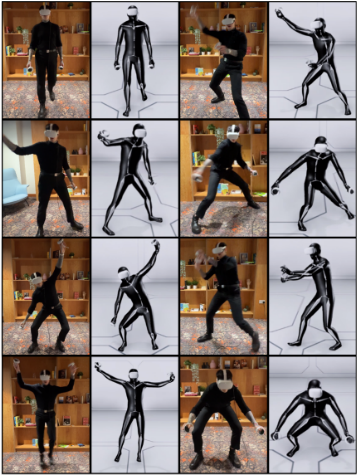
and CVAE can achieve much better tracking accuracies, however at the cost of reduced motion detail. The quality loss may appear because of network wrongly blending output motions due to the ambiguity between control and motion, or the difficulty of sharply modeling the transition dynamics during autoregression. Typical artifacts are drifting movements where the lower body becomes dragged by the upper body inputs. In contrast, our method achieves both minimal tracking error and high motion detail: Our codebook matching prevents wrong blending since the ambiguity only lives in the probabilistic motion selection but not in the reconstruction, and the discrete structure can well model the temporal dynamics during autoregression. We further noticed that our method can achieve better detail than motion matching on this task. While motion matching suffers from pose duplicate problems on larger datasets, our codebook matching enables better coverage of diverse motions by sampling from a compact as well as control-informed latent space.
We also compared our method to state-of-the-art techniques including AvatarPoser [Jiang et al. 2022] and AGRoL [Du et al. 2023] that were developed specifically for the three-point tracking task. In Table 3 it can be observed that our method performs well for motions even when there is no clear pattern in the upper body motion from which a unique lower body motion could be inferred. For example, if the arms both in a waving pattern during walking, both AvatarPoser and AGRoL can infer a corresponding leg stepping pattern. However, if the arms remain more static, the lower body exhibits severe drifting motions without clear steps performed by the avatar. Similar loss in motion detail can be observed for crouching behaviors or when the user performs more unstructured motions with the trackers. Such artifacts may be caused since both methods merely reconstruct poses from a window of tracker inputs but without explicitly requiring the model to traverse the motion manifold in an autoregressive manner as done by our framework.

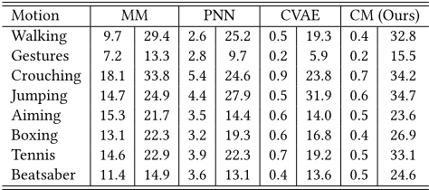
Recognized table text (check against the image)
| Motion | MM | PNN | CVAE | CM (Ours) | ||||
|---|---|---|---|---|---|---|---|---|
| Walking | 9.7 | 29.4 | 2.6 | 25.2 | 0.5 | 19.3 | 0.4 | 32.8 |
| Gestures | 7.2 | 13.3 | 2.8 | 9.7 | 0.2 | 5.9 | 0.2 | 15.5 |
| Crouching | 18.1 | 33.8 | 5.4 | 24.6 | 0.9 | 23.8 | 0.7 | 34.2 |
| Jumping | 14.7 | 24.9 | 4.4 | 27.9 | 0.5 | 31.9 | 0.6 | 34.7 |
| Aiming | 15.3 | 21.7 | 3.5 | 14.4 | 0.6 | 14.0 | 0.5 | 23.6 |
| Boxing | 13.1 | 22.3 | 3.2 | 19.3 | 0.6 | 16.8 | 0.4 | 26.9 |
| Tennis | 14.6 | 22.9 | 3.9 | 22.3 | 0.7 | 19.2 | 0.5 | 33.1 |
| Beatsaber | 11.4 | 14.9 | 3.6 | 13.1 | 0.4 | 13.6 | 0.5 | 24.6 |

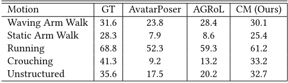
Recognized table text (check against the image)
| Motion | GT | AvatarPoser | AGRoL | CM (Ours) |
|---|---|---|---|---|
| Waving ArmWalk | 31.6 | 23.8 | 28.4 | 30.1 |
| Static ArmWalk | 28.3 | 7.9 | 8.6 | 25.4 |
| Running | 68.8 | 52.3 | 59.3 | 61.2 |
| Crouching | 41.3 | 9.2 | 13.2 | 33.2 |
| Unstructured | 35.6 | 17.5 | 20.2 | 32.7 |
Next, in Fig. 10 we show our model reconstructing diverse user motions wearing VR devices and to generalize well to unseen poses. When the user performs locomotion behaviors, our method can identify the correct leg stepping in synchronization with the arms. It also can produce decisive leg movements if the arms are rather static and in which case different phases in the leg motion are equally likely. Our framework also performs well on high agility or unstructured movements such as punching or jumping from one place to another, aiming, or performing quick transitions between crouching movements.
However, as the mapping from three-point inputs to full-body motions is inherently ambiguous, different lower-body motions may naturally result under the same tracking history. In Fig. 11 we demonstrate our framework producing such possible motion variations by sampling different transitions from the codebook. For example, the avatar may use a different support leg while playing tennis or blocking a punch or sit in a chair with slightly different poses. Despite such ambiguity, our framework produces plausible variations in the lower body while accurately reaching the tracker locations with the upper body. Specifically for such tasks, learning a direct mapping from control to motion without sampling from a motion prior may suffer from ambiguity and reduced diversity in the generated motions. We demonstrate such learning behavior in the appendix section A.

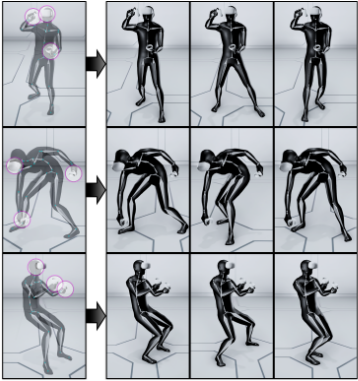
6.3 Hybrid Control
In this section we demonstrate combining three-point tracker inputs with joystick inputs to allow the user synthesizing full-body avatar movements in a hybrid control scheme. This method extends traditional locomotion control in video games and current threepoint tracking setups with the ability to perform embodied motion behaviors in the virtual world while remaining standing or sitting in the real world. In Fig. 12 we demonstrate how our method translates both input modalities into a plausible embodied avatar motion that preserves the original motion context of the user. More specifically, given the upper body information user, our codebook matching automatically samples lower body movements to support actions such as standing, crouching, weight shifting or jumping. Additively controlling the trajectory via joystick inputs then allows translating those movements into locomotion behaviors which can be especially valuable in real-world environments with limited space. As shown in Fig. 13, the user may perform locomotion while aiming, jump from one place to another or transition between standing and crouching. When the user remains sitting in a chair, the character will either perform a crouching motion when calibrated during standing or a regular walking animation with the lower body when calibrated during sitting.
Since in this control mode, the user performs a different motion in the virtual world than in the real world, matching the actual tracker locations may not produce a realistic motion that would feel embodied to the user. For example, when standing still in the real world, plausible arm movements during walking or running would be expected in the virtual world. We list the expected deviation between tracked and generated locations for the head and wrists in Table 4. We noticed that the deviation is usually lower for slow movements, such as performing gestures or walking, and can be higher for crouching or when performing sports motions.

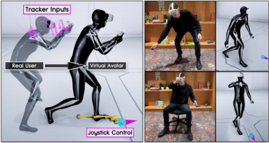

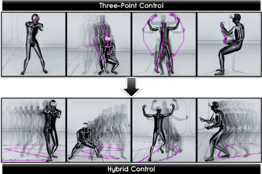
6.4 Game Applications
To demonstrate the applicability of our method in VR, we implemented three different game situations shown in Fig. 1. First, the left image shows a game where the user has to avoid spawning obstacles that are moving along its way and to transition into a suitable pose in order to fit through a gap within the blocks. Our method can well generate movements to reposition the whole body in a highly responsive manner that is needed to avoid collisions with the objects. Second, the middle image shows a game where the user is slicing cubic animals with lightsabers. This requires the user to perform agile lower body steps within a small area and to perform precise movements of the hands in order to slice to targets. Third, the right image shows a VR shooter application in an open world where the user can freely move around in the virtual world while remained standing or sitting in a chair in the real world. Our hybrid control mechanism enables synthesizing embodied character movements that translate the aiming behavior of the human onto the virtual avatar while freely performing locomotion.

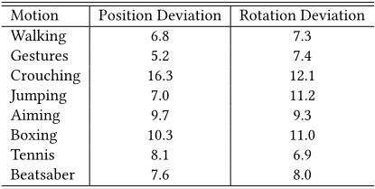
Recognized table text (check against the image)
| Motion | Position Deviation | Rotation Deviation |
|---|---|---|
| Walking | 6.8 | 7.3 |
| Gestures | 5.2 | 7.4 |
| Crouching | 16.3 | 12.1 |
| Jumping | 7.0 | 11.2 |
| Aiming | 9.7 | 9.3 |
| Boxing | 10.3 | 11.0 |
| Tennis | 8.1 | 6.9 |
| Beatsaber | 7.6 | 8.0 |
6.5 Collision Avoidance
Producing collision-free motions for body and hands is essential to create immersive experiences in VR. For example, the user may touch its arms or legs or objects in the environment and expect plausible adaption of the fingers without intersecting the mesh surfaces. To achieve this, we demonstrate how our codebook matching technique can be applied to producing collision-free behaviors with diverse geometries without ever having seen real geometry data.
The core idea is to project against poses within a collision-free space by sampling arbitrary geometry in form of random noise around that space. We visualize our data sampling mechanism in Fig. 14. We approximate the character mesh via primitive colliders and use a voxel-based representation [Starke et al. 2019] to compute the occupied space by the character. We then set the occupancy value 𝑂𝑖 of every occupied voxel to zero and randomly noise this value for every remaining voxel. Every empty voxel now represents a pose in a collision-free space and every non-zero voxel models arbitrary geometry configurations around that pose.

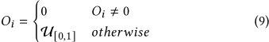
In addition, to project the character pose against the closest collisionfree configuration in the motion data, for each character joint we compute a target location𝑇𝑗 by interpolating its current position 𝑃𝑗 and closest voxel position𝑉𝑘 .

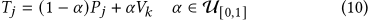
We then train our framework using the simulated collision geometry as well as the sampled target positions as inputs X to our codebook matching architecture and learn the sampling of the original collision-free poses as outputs Y.
In Fig. 15 we demonstrate this technique able to resolve collisions with objects as well as self-intersections in real-time. Without having seen any geometry data during training, the model can robustly avoid collisions with primitive objects such spheres or cuboids (left). The character takes crouching poses or leans the upper body to the side when moving the object close around the body. The model can also predict collision-free poses when using non-convex geometries, such as moving one or multiple chairs randomly around the character (middle). The character will then adapt its arm or body in order to avoid collisions with the back or legs of the chair. Lastly, it is also possible to apply this method in combination with our embodied character controller to add plausible finger movements when interacting with the body or objects in virtual reality (right). When the user moves both controllers close together, its avatar will make two fists or an open hand to avoid penetrations between its fingers. Similarly, when moving the controllers close to its body such as arms or legs, the fingers will be adapted to fold around the mesh of the avatar.

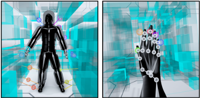

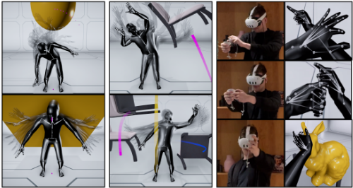
This experiment further demonstrates our codebook matching technique being well-suited to learn mapping between feature spaces of low and high dimensionality. For instance, while our character controller takes a low-dimensional input and maps to a highdimensional output motion sequence, our collision avoidance setup maps from high-dimensional geometry data to a single pose.
6.6 Ablation Study
The key differences of our method compared to existing techniques for kinematic character control are that 1) we use a discrete instead of continuous representation of the latent space to learn the motion manifold, 2) we are able to train our model in an end-to-end manner instead of training a motion prior and controller separately thanks to our codebook matching, and 3) we represent the motion sampling in form of categorical probabilities to synthesize diverse motion behaviors. To evaluate the impact for each of them, in Table 5 we list the loss in motion quality when removing one of those methods from our complete setup.
Using a discrete latent structure scores the largest quality improvements, almost doubling the motion detail. Compared to a continuous latent space, the quantization alleviates the distribution shift problem during autoregression where the latent vectors that are generated during inference may increasingly deviate from the observations that are seen during training. This can lead to severe drifting artifacts in the generated movements during runtime.
Next, our proposed end-to-end training of codebook and control similarly achieves large improvements in motion quality. Training a motion prior separately may form a complex latent structure where it can be difficult finding the right motions in the codebook afterwards. Our method enables that the codebook can be easily queried during inference due to the codebook matching loss, which achieves more sharp and realistic transitions between poses.

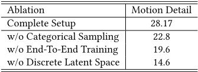
Recognized table text (check against the image)
| Ablation | Motion Detail |
|---|---|
| Complete Setup | 28.17 |
| w/o Categorical Sampling | 22.8 |
| w/o End-To-End Training | 19.6 |
| w/o Discrete Latent Space | 14.6 |
Lastly, the categorical representation facilitates that both codebooks can be easier matched during training. Instead, if using a non-probabilistic latent structure, we observed the input encoder not being able to accurately approximate the distribution of the output encoder as no strong projection is applied. Furthermore, sampling multiple codes during inference helps increasing the diversity and chances of finding suitable motion transitions.
7 DISCUSSION AND LIMITATIONS
In this section we discuss some observations which we believe can be interesting to the community and explain limitations of our work and what may be the next steps for synthesizing embodied avatar movements in virtual reality.
7.1 Analogy to Motion Matching
Our codebook matching architecture shares many similarities with motion matching. A standard motion matching setup consists of a Database to store the pose vectors at each frame, a Projection to map from inputs to search vectors, a Search to return the closest pose candidates to the search vector, Decoding of the vector to obtain the pose data, and a Stepping mechanism to select a next pose or sequence from those candidates. Our setup is able to learn a similar structure in an end-to-end manner via the following analogies:
· Database: The vector-quantized autoencoder that learns a discrete motion manifold to compress the motion data.
· Projection: The input encoder that learns matching the codebook vectors in form of probabilities.
· Search: The categorical sampling that enables returning multiple codebook vectors under the same inputs.
· Decoding: The codebook decoder that uniquely maps vectors in the codebook to specific motion outputs.
· Stepping: The predicted future motion sequence that enables stepping one or multiple frames forward.
While motion matching can bypass ambiguity in the mapping from control to motion by selecting among candidates with similar query distances, our setup selects possible outcomes from predicted probabilities. If the predicted probabilities are similar, their sampling of categorical vectors will select possible output motions. In addition, while the search space of motion matching is purely based on the motion data, our latent space is constructed conditioned on the control signal. Furthermore, while motion matching suffers from pose duplicate problems in the database, our method encodes same poses with the same code which achieves a much more compact representation. Thus, our codebook matching functions similar to motion matching but without requiring to keep the data after training nor a pre-existing motion matching setup before training [Holden et al. 2020], provides better search stability and motion accuracy, as well as reduced manual labour for feature engineering. We demonstrate in appendix section A that our method approximates a database search but allows generalizing between samples.
7.2 Additional Sensor Information
Depending on the motion task, working with three-point inputs can be highly expressive but also contain very little information about the actual full-body movements of the user. For instance, the arm swinging movements during walking or running cover strong correlation in the phase of the leg movements. On the other hand, the user may sit in a chair with lower poses that can be drastically different for the same upper body poses. This is particularly the case for resting poses or slow movements where the tracker history remains at similar locations and more ambiguity in the lower body motion may exist. We show such example in Fig. 16 where the predicted pose by our method appears plausible but the lower body of the avatar is in a completely different pose than the user. To address such situations, additional sensor data may be required such as using the camera image of the headset or the IMU data of a smartphone located in the pockets. Such sensors however can be less reliable as they depend on where the user is looking or on carrying such additional devices, which requires further consideration.
7.3 Supporting Avatar Morphologies
Handling users of different height, shape or body proportions is desirable for embodied VR applications. For instance, users may differently perform walking or sports movements depending on such parameters. However, directly learning from motion data that covers such variations introduces additional ambiguity and potentially degrade tracking accuracy and quality. In our training, all motion data has the same fixed skeletal layout and requires input scaling during runtime which outputs the same avatar skeleton regardless of the user height. Furthermore, users may choose an avatar that contains multiple legs or arms, artistic elements such as a tail or wings, or wish to be embodied as a quadruped or dragon. Supporting such multi-modality of diverse avatar morphologies from tracker inputs will be key for enhancing user experiences.

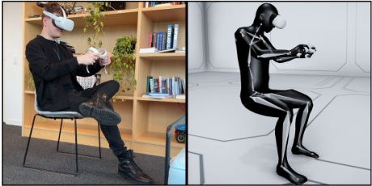
8 CONCLUSION
This work presents a novel framework for learning embodied character controllers to create responsive and realistic avatar movements with zero delay. To achieve this, we propose a technique that we name Codebook Matching which enables training a discrete motion manifold and how to sample from it in an end-to-end manner by matching the probability distributions between two categorical codebooks. This differs from existing works that learn a motion prior and controller separately in such way that our latent vectors are informed about both the motion and control, which enables better motion coverage and accuracy during inference. Our method is able to synthesize a diverse range of avatar motions via threepoint inputs and outperforms existing works by producing less drifting artifacts and better transitions between poses. Beyond motion tracking tasks in virtual reality, our method further supports optional control modalities in form of joystick or button inputs in a hybrid control scheme. We demonstrated our technique on generating movements such as locomotion, gestures, squatting, jumping, performing sports as well as collision-avoidance behaviors and its ability to approximate a database search while enabling generalization between samples. Future research on this problem may address supporting different user proportions or avatar morphologies to enable greater flexibility of embodiment in the metaverse.
REFERENCES
Sadegh Aliakbarian, Pashmina Cameron, Federica Bogo, Andrew Fitzgibbon, and Thomas J Cashman. 2022. Flag: Flow-based 3d avatar generation from sparse observations. In Proceedings of the IEEE/CVF Conference on Computer Vision and Pattern Recognition. 13253-13262.
Okan Arikan and David A Forsyth. 2002. Interactive motion generation from examples. ACM Trans on Graph 21, 3 (2002), 483-490. https://doi.org/10.1145/566654.566606 Kyungmin Cho, Chaelin Kim, Jungjin Park, Joonkyu Park, and Junyong Noh. 2021. Motion recommendation for online character control. ACM Transactions on Graphics (TOG) 40, 6 (2021), 1-16.
Simon Clavet. 2016. Motion matching and the road to next-gen animation. In Proc. of GDC.
Andrea Dittadi, Sebastian Dziadzio, Darren Cosker, Ben Lundell, Thomas J Cashman, and Jamie Shotton. 2021. Full-body motion from a single head-mounted device: Generating smpl poses from partial observations. In Proceedings of the IEEE/CVF International Conference on Computer Vision. 11687-11697.
Yuming Du, Robin Kips, Albert Pumarola, Sebastian Starke, Ali Thabet, and Artsiom Sanakoyeu. 2023. Avatars Grow Legs: Generating Smooth Human Motion from Sparse Tracking Inputs with Diffusion Model. arXiv:cs.CV/2304.08577
Keith Grochow, Steven L Martin, Aaron Hertzmann, and Zoran Popović. 2004. Stylebased inverse kinematics. In ACM SIGGRAPH 2004 Papers. 522-531.
Daniel Holden, Oussama Kanoun, Maksym Perepichka, and Tiberiu Popa. 2020. Learned motion matching. ACM Transactions on Graphics (TOG) 39, 4 (2020), 53-1.
Daniel Holden, Taku Komura, and Jun Saito. 2017. Phase-functioned neural networks for character control. ACM Trans on Graph 36, 4 (2017), 42. https://doi.org/10.1145/ 3072959.3073663
Daniel Holden, Jun Saito, and Taku Komura. 2016. A deep learning framework for character motion synthesis and editing. ACM Trans on Graph 35, 4 (2016), 138.
Daniel Holden, Jun Saito, Taku Komura, and Thomas Joyce. 2015. Learning motion manifolds with convolutional autoencoders. In SIGGRAPH Asia 2015 Technical Briefs. ACM, 18.
Yinghao Huang, Manuel Kaufmann, Emre Aksan, Michael J Black, Otmar Hilliges, and Gerard Pons-Moll. 2018. Deep inertial poser: Learning to reconstruct human pose from sparse inertial measurements in real time. ACM Transactions on Graphics (TOG) 37, 6 (2018), 1-15.
Eric Jang, Shixiang Gu, and Ben Poole. 2017. Categorical Reparameterization with Gumbel-Softmax. arXiv:stat.ML/1611.01144
Biao Jiang, Xin Chen, Wen Liu, Jingyi Yu, Gang Yu, and Tao Chen. 2023. MotionGPT: Human Motion as a Foreign Language. arXiv preprint arXiv:2306.14795 (2023).
Jiaxi Jiang, Paul Streli, Huajian Qiu, Andreas Fender, Larissa Laich, Patrick Snape, and Christian Holz. 2022. AvatarPoser: Articulated Full-Body Pose Tracking from Sparse Motion Sensing. arXiv:cs.CV/2207.13784
Hanyang Kong, Kehong Gong, Dongze Lian, Michael Bi Mi, and Xinchao Wang. 2023. Priority-Centric Human Motion Generation in Discrete Latent Space. arXiv:cs.CV/2308.14480
Lucas Kovar, Michael Gleicher, and Frédéric Pighin. 2002. Motion graphs. ACM Trans on Graph 21, 3 (2002), 473-482. https://dl.acm.org/doi/10.1145/566654.566605
Jehee Lee, Jinxiang Chai, Paul SA Reitsma, Jessica K Hodgins, and Nancy S Pollard. 2002. Interactive control of avatars animated with human motion data. ACM Trans on Graph 21, 3 (2002), 491-500. https://doi.org/10.1145/566654.566607
Jehee Lee and Kang Hoon Lee. 2004. Precomputing avatar behavior from human motion data. In Proceedings of the 2004 ACM SIGGRAPH/Eurographics symposium on Computer animation. 79-87.
Kyungho Lee, Seyoung Lee, and Jehee Lee. 2018. Interactive character animation by learning multi-objective control. ACM Transactions on Graphics (TOG) 37, 6 (2018), 1-10.
Kang Hoon Lee, Myung Geol Choi, and Jehee Lee. 2006. Motion patches: building blocks for virtual environments annotated with motion data. ACM Trans on Graph 25, 3 (2006). https://doi.org/10.1145/1141911.1141972
Sunmin Lee, Sebastian Starke, Yuting Ye, JungdamWon, and Alexander Winkler. 2023a. QuestEnvSim: Environment-Aware Simulated Motion Tracking from Sparse Sensors. In Special Interest Group on Computer Graphics and Interactive Techniques Conference Conference Proceedings (SIGGRAPH '23). ACM. https://doi.org/10.1145/3588432. 3591504
Sunmin Lee, Sebastian Starke, Yuting Ye, JungdamWon, and Alexander Winkler. 2023b. QuestEnvSim: Environment-Aware Simulated Motion Tracking from Sparse Sensors. arXiv preprint arXiv:2306.05666 (2023).
Yongjoon Lee, Kevin Wampler, Gilbert Bernstein, Jovan Popović, and Zoran Popović. 2010. Motion fields for interactive character locomotion. In ACM SIGGRAPH Asia 2010 papers. 1-8.
Sergey Levine, Jack MWang, Alexis Haraux, Zoran Popović, and Vladlen Koltun. 2012. Continuous character control with low-dimensional embeddings. ACM Transactions on Graphics (TOG) 31, 4 (2012), 1-10.
Yan Li, Tianshu Wang, and Heung-Yeung Shum. 2002. Motion texture: a two-level statistical model for character motion synthesis. In Proceedings of the 29th annual conference on Computer graphics and interactive techniques. 465-472.
Hung Yu Ling, Fabio Zinno, George Cheng, and Michiel Van De Panne. 2020. Character controllers using motion VAEs. ACM Transactions on Graphics 39, 4 (Aug. 2020). https://doi.org/10.1145/3386569.3392422
Ilya Loshchilov and Frank Hutter. 2019. Decoupled weight decay regularization. In International Conference on Learning Representations.
Michal Mach and Maksym Zhuravlov. 2021. Motion Matching in 'The Last of Us Part II'. https://www.gdcvault.com/play/1027118/Motion-Matching-in-The-Last.
Jianyuan Min and Jinxiang Chai. 2012. Motion graphs++ a compact generative model for semantic motion analysis and synthesis. ACM Transactions on Graphics (TOG) 31, 6 (2012), 1-12.
Aaron van den Oord, Oriol Vinyals, and Koray Kavukcuoglu. 2017. Neural discrete representation learning. arXiv preprint arXiv:1711.00937 (2017).
Xue Bin Peng, Yunrong Guo, Lina Halper, Sergey Levine, and Sanja Fidler. 2022. Ase: Large-scale reusable adversarial skill embeddings for physically simulated characters. ACM Transactions On Graphics (TOG) 41, 4 (2022), 1-17.
Mathis Petrovich, Michael J Black, and Gül Varol. 2021. Action-conditioned 3D human motion synthesis with transformer VAE. In Proceedings of the IEEE/CVF International Conference on Computer Vision. 10985-10995.
Jose Luis Ponton, Haoran Yun, Carlos Andujar, and Nuria Pelechano. 2022. Combining Motion Matching and Orientation Prediction to Animate Avatars for ConsumerGrade VR Devices. Computer Graphics Forum 41, 8 (2022), 107-118. https://doi.org/ 10.1111/cgf.14628
Daniele Reda, Jungdam Won, Yuting Ye, Michiel van de Panne, and Alexander Winkler. 2023. Physics-based Motion Retargeting from Sparse Inputs. Proceedings of the ACM on Computer Graphics and Interactive Techniques 6, 3 (2023), 1-19.
Alexander Richard, Michael Zollhöfer, Yandong Wen, Fernando De la Torre, and Yaser Sheikh. 2021. Meshtalk: 3d face animation from speech using cross-modality disentanglement. In Proceedings of the IEEE/CVF International Conference on Computer Vision. 1173-1182.
Hubert PH Shum, Taku Komura, Masashi Shiraishi, and Shuntaro Yamazaki. 2008. Interaction patches for multi-character animation. ACM Trans on Graph 27, 5 (2008). https://doi.org/10.1145/1457515.1409067
Sebastian Starke, Ian Mason, and Taku Komura. 2022. DeepPhase: Periodic autoencoders for learning motion phase manifolds. ACM Trans on Graph 41, 4 (2022).
Sebastian Starke, He Zhang, Taku Komura, and Jun Saito. 2019. Neural state machine for character-scene interactions. ACM Trans on Graph 38, 6 (2019), 209. https: //doi.org/10.1145/3355089.3356505
GrahamW Taylor and Geoffrey E Hinton. 2009. Factored conditional restricted Boltzmann machines for modeling motion style. In Proceedings of the 26th annual international conference on machine learning. 1025-1032.
Graham W Taylor, Geoffrey E Hinton, and Sam T Roweis. 2007. Modeling human motion using binary latent variables. In Advances in neural information processing systems. 1345-1352. https://papers.nips.cc/paper/ 3078-modeling-human-motion-using-binary-latent-variables
Guy Tevet, Sigal Raab, Brian Gordon, Yoni Shafir, Daniel Cohen-or, and Amit Haim Bermano. 2023. Human Motion Diffusion Model. In The Eleventh International Conference on Learning Representations. https://openreview.net/forum?id=SJ1kSyO2jwu
Guillermo Valle-Pérez, Gustav Eje Henter, Jonas Beskow, André Holzapfel, Pierre-Yves Oudeyer, and Simon Alexanderson. 2021. Transflower: probabilistic autoregressive dance generation with multimodal attention. ACM Transactions on Graphics (TOG) 40, 6 (2021), 1-14.
Aaron Van Den Oord, Oriol Vinyals, et al. 2017. Neural discrete representation learning. Advances in neural information processing systems 30 (2017).
Timo Von Marcard, Bodo Rosenhahn, Michael J Black, and Gerard Pons-Moll. 2017. Sparse inertial poser: Automatic 3d human pose estimation from sparse imus. In Computer graphics forum, Vol. 36. Wiley Online Library, 349-360.
J Wang, D Fleet, A Hertzmann, R Urtasun, A Geiger, J Popovic, T Darrell, N Lawrence, and P Fua. 2008. Gaussian process models for human pose and motion. IEEE transactions on pattern analysis and machine intelligence 30, 2 (2008), 283-298.
Alexander Winkler, JungdamWon, and Yuting Ye. 2022. QuestSim: Human Motion Tracking from Sparse Sensors with Simulated Avatars. In SIGGRAPH Asia 2022 Conference Papers (SA '22). ACM. https://doi.org/10.1145/3550469.3555411
Dongseok Yang, Doyeon Kim, and Sung-Hee Lee. 2021. Lobstr: Real-time lower-body pose prediction from sparse upper-body tracking signals. In Computer Graphics Forum, Vol. 40. Wiley Online Library, 265-275.
Sicheng Yang, Zhiyong Wu, Minglei Li, Zhensong Zhang, Lei Hao, Weihong Bao, and Haolin Zhuang. 2023. QPGesture: Quantization-Based and Phase-Guided Motion
Matching for Natural Speech-Driven Gesture Generation. arXiv:cs.HC/2305.11094
Heyuan Yao, Zhenhua Song, Yuyang Zhou, Tenglong Ao, Baoquan Chen, and Libin Liu. 2023. MoConVQ: Unified Physics-Based Motion Control via Scalable Discrete Representations. arXiv:cs.CV/2310.10198
Yuting Ye and C Karen Liu. 2012. Synthesis of detailed hand manipulations using contact
sampling. ACMTrans onGraph 31, 4 (2012). https://doi.org/10.1145/2185520.2185537
Yongjing Ye, Libin Liu, Lei Hu, and Shihong Xia. 2022. Neural3Points: Learning to Generate Physically Realistic Full-body Motion for Virtual Reality Users. In Computer Graphics Forum, Vol. 41. Wiley Online Library, 183-194.
Hongwei Yi, Hualin Liang, Yifei Liu, Qiong Cao, Yandong Wen, Timo Bolkart, Dacheng Tao, and Michael J Black. 2023. Generating Holistic 3D Human Motion from Speech. In IEEE/CVF Conf. on Computer Vision and Pattern Recognition (CVPR). 469-480.
Xinyu Yi, Yuxiao Zhou, Marc Habermann, Soshi Shimada, Vladislav Golyanik, Christian Theobalt, and Feng Xu. 2022. Physical Inertial Poser (PIP): Physics-aware Real-time Human Motion Tracking from Sparse Inertial Sensors. In IEEE/CVF Conference on Computer Vision and Pattern Recognition (CVPR).
He Zhang, Sebastian Starke, Taku Komura, and Jun Saito. 2018. Mode-adaptive neural networks for quadruped motion control. ACM Trans on Graph 37, 4 (2018). https: //doi.org/10.1145/3197517.3201366
Jianrong Zhang, Yangsong Zhang, Xiaodong Cun, Shaoli Huang, Yong Zhang, Hongwei Zhao, Hongtao Lu, and Xi Shen. 2023. T2M-GPT: Generating Human Motion from Textual Descriptions with Discrete Representations. arXiv:cs.CV/2301.06052
Zixiang Zhou and Baoyuan Wang. 2023. UDE: A Unified Driving Engine for Human Motion Generation. In Proceedings of the IEEE/CVF Conference on Computer Vision and Pattern Recognition (CVPR). 5632-5641.
Qingxu Zhu, He Zhang, Mengting Lan, and Lei Han. 2023. Neural Categorical Priors for Physics-Based Character Control. ACM Trans. Graph. 42, 6, Article 178 (dec 2023), 16 pages. https://doi.org/10.1145/3618397
A LEARNING AMBIGUOUS FUNCTIONS
Approximating ambiguous functions where same inputs can map to multiple equally-likely outputs is not trivial. Mapping from sparse sensor inputs to high fidelity output motions represents such problem where multiple motion outcomes, such as different lower body configurations, can be similarly plausible under the same control inputs. Neural networks may then produce undesired blending artifacts between poses which results in blurring or drifting due to ambiguity. To experiment our framework for such situations, we set up a toy example problem of inherently ambiguous functions as shown in Fig. 18. We learn a mapping from a single input value to a quadratic output function that can be on the either positive or negative side using a random sign B ∈ {-1, 1}.

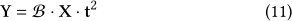

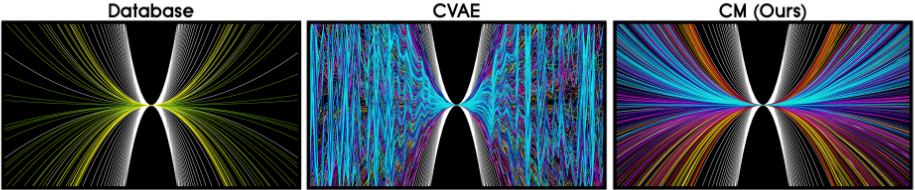
More specifically, the goal is to predict an ambiguous but coherent sequence of points Y ∈ R 100 within t = [-2, 2] from a single input value X = [0, 1] ∈ R 1 that only defines the steepness of that function and where no fluctuation of predicted points between the positive or negative side is considered valid. We train our model on multiple random samples of such functions to predict Y from X.
We demonstrate the ability of different methods to reconstruct such ambiguous functions in Fig. 19. The left column shows methods that learn a direct mapping between inputs and outputs, including a multilayer perceptron (MLP), a variational autoencoder (VAE) and a vector-quantized network (VQ). The right column includes methods that instead select or sample from a distribution that is informed about the outputs, including a database search as baseline, a conditional variational autoencoder (CVAE) and our codebook matching (CM). The MLP produces an average of all functions and predicts zero values for any input provided to the model. In character control, this may produce a stiff drifting animation if a decision between left or right foot step is required. Similarly, a VAE may only approximate the behavior of a MLP despite its ability to sample from a distribution if learning a direct mapping from an underconditioned inputs to more expressive outputs. A VQ model can alleviate the noise problem, which uses a categorical latent space similar to our method but without codebook matching.
Very different results can be observed for methods that are informed about the output distribution during training. If looking up possible mappings from X to Y by searching within a database that stores all such outcomes, we can select the closest match on the either positive or negative side. However, there can be gaps between functions due to missing samples in the database which are projected against the closest candidates. For motion, certain transitions to accurately track the user inputs may not be found then.

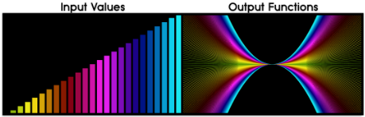
Using a CVAE improves the results of a VAE by instead providing the inputs as condition to the decoder and concatenating them with sampled Gausian vectors. However, instable results especially for samples that are less frequently seen during training may occur. Despite its ability to approximate such multi-modal distributions, its continuous latent space can produce severe motion drifting artifacts as we show in the supplementary video. Lastly, using our CM can learn a better reconstruction by instead sampling possible outcomes from the codebook directly. Compared to the database results, our method can predict outputs between missing samples in the data.
Finally, we experiment the behavior for data extrapolation in Fig. 17 by increasing the input values by a factor of 8 which requires the methods to output functions of higher steepness. While the database search projects most samples against the function with the highest steepness contained in the data, the CVAE fails to produce smooth points which does not match any of the samples observed during training. Similar to the database, our CM does not extrapolate beyond data samples either, but allows for interpolation between them. Therefore, we found our method to approximate the behavior of a database search but while still enabling generalization to predict samples that may be missing in the data.

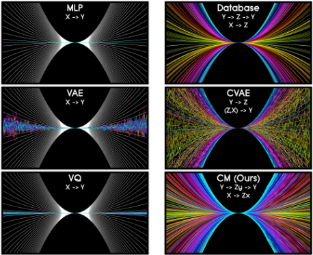